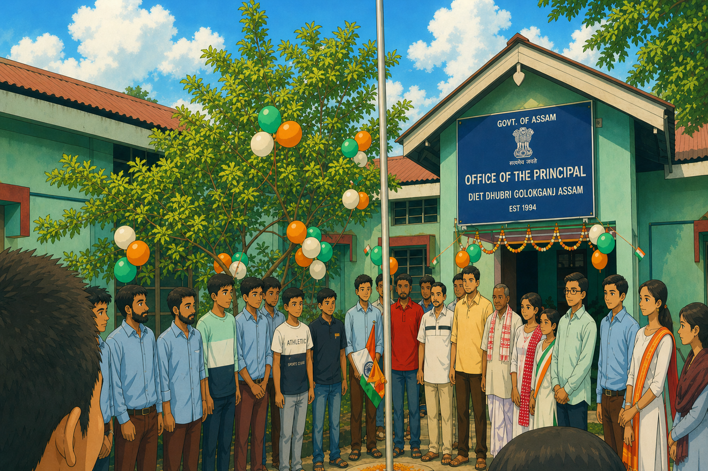

নমস্কাৰ -> class 2d sem
NEP 2020 ৰ অধীনত NCFSE 2023 ৰ উৎপত্তি কেনেকৈ হ’ল? সেই বিষয়ে আমি চাম।
নতুন 5+3+3+4 পাঠ্যক্রম মানে কি বুজো --->সেই বিষয়ে আজি আমি চাম।
education Shifted from rote learning to ---->দক্ষতাভিত্তিক শিক্ষা ব্যৱস্থালৈ পৰিৱৰ্তন কেনেকৈ হ’ল আজি আমি চাম।
আগতে কি framework আছিল আৰু ---> এতিয়া কি হৈছে, এই বিষয়ে আজি আমি আলোচনা কৰিম।
5+3+3+4 ভৱিষ্যতে কেনেকৈ সহায় কৰিব আজি আমি চাম।
Summary
The National Curriculum Framework for School Education (NCFSE) 2023 is developed by NCERT under the guidance of the Ministry of Education. It is based on the vision of the National Education Policy (NEP) 2020. It acts like a roadmap to implement NEP 2020 in schools. 👉 Simple idea: NEP 2020 = What to do (vision) NCFSE 2023 = How to do it (implementation)
Physical Development
(Annamaya Kosha)
Life Energy
(Pranamaya Kosha)
Mental/Emotional
(Manomaya Kosha)
Intellectual
(Vijnanamaya Kosha)
Blissful/Spiritual
(Anandamaya Kosha)
"Nurturing well-rounded individuals through the ancient Indian model of holistic development."
কিয় এইটো গুৰুত্বপূৰ্ণ? Covers early childhood education (age 3+) Focus on holistic development (Panchakosha Vikas) Reduces rote learning, increases understanding Aligns with child psychology
Problem: No focus on early childhood (age 3–6) More rote learning (ratta maro system) Less focus on development stages of child
✔ Early childhood education is now part of formal education ✔ Focus on Panchakosha Vikas (overall development) ✔ Learning based on child psychology, not just syllabus
Old system (10+2) ignored early childhood, while new 5+3+3+4 structure includes ages 3–18 and is based on developmental stages of children.
Moving beyond Rote Learning:
বিভিন্ন ধৰণৰ এক্টিভিটিৰ মাধ্যমে আমি ৰট মেমোৰাইজেচন নকৰি, ল’ৰা-ছোৱালীবিলাকক প্লে-ৱে মেথডৰ সহায়ত ধ্যান কেন্দ্ৰীভূত কৰিব পাৰিম।
গাঁও অঞ্চলত আমি বেছি কৈ গুৰুত্ব দিব লাগিব।
NCFSE 2023 ye >> আমাক কি শিকাতকৈ >>>> কেনেকৈ আমি শিকিম ইয়াত বেছি গুৰুত্ব দিছে।
PPT presented by: